Im Register "Allgemein" können Parameter definiert werden, welche sich auf die Eigenschaften des Programms auswirken.

Sprache
Ø WinLine-Sprache
An dieser Stelle kann die Sprache ausgewählt werden, mit welcher im Programm gearbeitet werden soll. Die Spracheinstellung betrifft nicht nur die Menüs und Eingabemasken, sondern auch den Großteil der Ausdrucke, welche automatisch mit umgestellt werden.
Hinweis
Durch eine Umstellung der Sprache wird ein Neustart des Programms erforderlich.
Achtung
Standardmäßig kann nur "00 - Deutsch" oder "01 - Englisch" ausgewählt werden. Für alle weiteren Sprachen ist eine gesonderte Lizenz erforderlich.
Audit
Ø Audit-Stufe
Über eine Auswahlliste kann an dieser Stelle definiert werden, wie intensiv Programmfunktionen protokolliert werden sollen. Dabei stehen folgende Möglichkeiten zur Auswahl:
ü 0 - nichts protokollieren
Es
werden nur die wichtigsten Ereignisse protokolliert. Dazu gehören
Programmaufrufe (Logins - ein Anwender ruft das Programm auf und arbeitet
damit), das Beenden des Programms und Systemfehler (das Programm kann z.B. nicht
zur Datenbank verbinden etc.).
ü 1 - keine Fensterwechsel
Es
werden alle Vorgänge protokolliert. Davon ausgenommen sind die sogenannten
"Fensterwechsel". Unter Fensterwechsel versteht man den Aufruf eines Menüpunkts.
Dadurch wird ein Fenster geöffnet, mit dem dann der entsprechende Vorgang
durchgeführt wird.
ü 9 - alles protokollieren
Es
werden alle Vorgänge protokolliert.
Hinweis
Die Auswertung des Auditprotokolls erfolgt im Programm "Auditprotokoll Funktionen" (WinLine START - Optionen - Auditprotokoll Funktionen).
Allgemeine Einstellungen
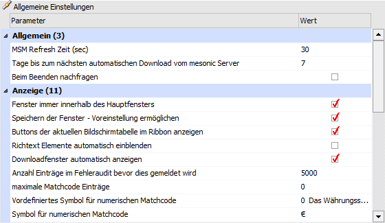
Ø MSM Refresh Zeit (sec)
Hier kann eingestellt werden, nach wie vielen Sekunden das Programm WinLine ADMIN alle Workstations überprüfen soll (der Standardwert = 30). Dabei wird überprüft, welche Workstations noch eingeloggt sind und welche dabei noch effektiv arbeiten. Im MSM (WinLine ADMIN - MSM - MSM) kann dadurch festgestellt werden, ob und welche Workstations arbeiten.
Achtung
Je kürzer die Refresh-Zeit eingestellt wird, desto mehr wird das Netzwerk belastet, da das Programm WinLine ADMIN in kürzeren Abständen die einzelnen Workstations überprüfen muss.
Ø Tage bis zum nächsten automatischen Download vom mesonic Server
An dieser Stelle kann definiert werden, nach wie vielen Tagen jeweils am mesonic Server nach Neuigkeiten bezüglich der WinLine gesucht werden soll. Es können alle Werte zwischen 0 (jeden Tag) und 30 eingegeben werden.
Ø Beim Beenden nachfragen
Durch Aktivierung dieser Option wird beim Beenden der WinLine nachgefragt, ob der Vorgang fortgesetzt werden soll.
Ø Fenster immer innerhalb des Hauptfensters
Standardmäßig ist diese Option immer aktiviert, wodurch alle Fenster immer innerhalb des Hauptfensters dargestellt werden.
Wenn die Option deaktiviert wird, dann können die Fenster nach dem nächsten Start frei positioniert werden (auch über Menüpunkte, Favoriten, etc.) und ggfs. im Hintergrund geöffnete Programme bleiben sichtbar. Mit dieser Variante können z.B. Abgleiche zwischen zwei Programmen leichter durchgeführt werden.
Achtung
Wenn die Fenster nicht innerhalb des Hauptfensters angezeigt werden, dann wird für das aktive Fenster kein Ribbon gebildet!
Beispiel (Option ist aktiviert)
Die WinLine nimmt den gesamten Desktop ein und ein geöffnetes Fenster kann nicht über das Menü oder die Favoriten geschoben werden.
Im Clientbereich der Anwendung (der Bereich den das Cockpit vollständig ausfüllt) werden Scrollbars dargestellt, wenn eines der angezeigten Fenster über den Clientbereich hinausragt (z. B. wenn es nach rechts verschoben wird oder schon von Beginn an zu groß für den Clientbereich ist). Mit den Scrollbars kann das Fenster wieder sichtbar gemacht werden.
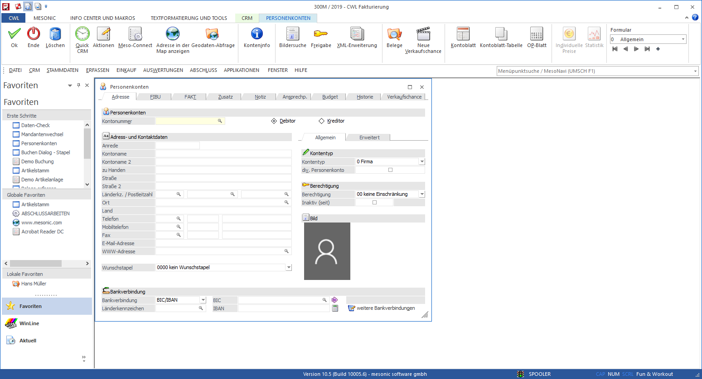
Beispiel (Option ist deaktiviert)
Die einzelnen Fenster der WinLine können frei verschoben werden (auch über das Menü) und Programme, welche im Hintergrund geöffnet sind, bleiben trotzdem sichtbar.
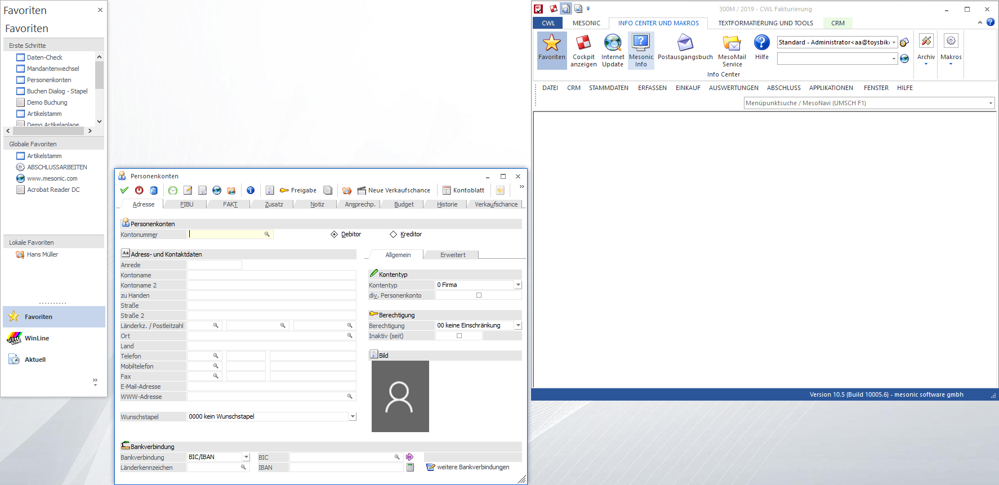
Ø Speichern der Fenster - Voreinstellung ermöglichen
Mit Hilfe dieser Checkbox kann definiert werden, ob der Voreinstellungs-Button zur Verfügung stehen soll oder nicht (nähere Informationen zu den Funktionen dieses Buttons entnehmen Sie bitte dem Kapitel "Die Voreinstellungen).
Hinweis
Ist ein Aktivieren nicht möglich, so wurde die gleichlautenden Einstellung im Register Admin deaktiviert.
Ø Buttons der aktuellen Bildschirmtabelle im Ribbon anzeigen.
An dieser Stelle kann definiert werden, ob die Buttons einer Tabelle im Ribbon angezeigt werden sollen, wenn der Fokus in einer Tabelle liegt.
Ø Richtext Elemente automatisch einblenden
Durch Aktivierung dieser Option wird der Ribbon "RTF UND TOOLS" automatisch eingeblendet, wenn der Programm-Fokus in einem RTF-Text-Feld liegt.
Ø Downloadfenster automatisch anzeigen
Diese Einstellung ist standardmäßig aktiviert. Wird diese deaktiviert so bewirkt dies folgendes:
ü MSM Nachrichten mit WEBUPDATE werden ignoriert; d.h. das Downloadfenster wird nicht geöffnet auch wenn ein anderer Client neue Elemente downloadet.
ü Wenn der Client startet und selbst neue Elemente downloadet öffnet sich das Downloadfenster nicht automatisch.
Ø Anzahl Einträge im Fehleraudit bevor dies gemeldet wird
Wird die hier angegebene Anzahl der Einträge im "Auditprotokoll-Funktionen" überschritten, erfolgt beim Starten der WinLine ein entsprechender Hinweis, wobei der Inhalt vom Benutzer abhängig ist:
ü "normaler" Benutzer
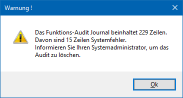
ü Administrator
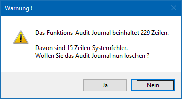
ü Wird die Meldung mit "Nein" bestätigt, kann in der WinLine gearbeitet werden, das Audit bleibt bestehen und beim nächsten Start wird die Meldung wieder angezeigt (ggf. mit geänderten Werten).
ü Wird die Meldung mit "Ja" bestätigt, wird das aktuelle Auditprotokoll weggesichert (ins Programmverzeichnis mit dem Namen "Backup Function Audit (JJJJ-MM-TT HHhMM).mbac" und im Anschluss daran dann gelöscht. Dieser Schritt wird auch gleich mit dem Eintrag "*** Neuanlage Audit-Datei ***" in das Protokoll geschrieben.
Ø maximale Matchcode Einträge
In diesem Feld kann die maximale Anzahl der Einträge definiert werden, die im Matchcode angezeigt werden sollen. Gibt es hierbei ein Suchresultat welches mehr Zeilen beinhaltet, werden diese Zeilen ignoriert. Bleibt der Wert auf 0, wird beim Auslösen des Matchcodes ohne Suchbegriff die folgende Meldung angezeigt:
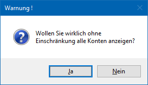
Erst durch Bestätigung der Meldung mit "JA" wird die Suche ausgeführt.
Ø Vordefiniertes Symbol für numerischen Matchcode
An dieser Stelle kann definiert werden, welches Symbol im Matchcode-Button von Zahlenfeldern angezeigt werden soll. Folgende Optionen stehen zur Verfügung:
ü 0 - das Währungssymbol aus der Windows-Systemsteuerung
ü 1 - '€' wenn in Windows eingestellt, sonst '$'
ü 2 - '€' wenn in einem Euroland, sonst '$'
ü 3 - '€' wenn Sprache eines Eurolandes eingestellt ist, sonst '$'
ü 4 - selbst gewähltes Zeichen
Ø Symbol für numerischen Matchcode
Hier kann jenes Währungssymbol hinterlegt werden, welches bei der Verwendung der Option "4 - selbst gewähltes Zeichen" (siehe Einstellung "Vordefiniertes Symbol für numerischen Matchcode ") genutzt wird.
Ø View 360 als eigenständiges Fenster
Durch Aktivierung der Option "View 360 als eigenständiges Fenster" wird die View 360 als eigenständiges Fenster dargestellt und kann somit frei verschoben und z. B. auf einen zweiten Bildschirm gelegt werden.
Hinweis
Über Rechtsklick->Fensterposition speichern merkt sich die WinLine die Position und Größe des Cockpits benutzerspezifisch.
Ø Hilfe direkt vom mesonic Server aufrufen
Eine Änderung wird pro Benutzer gespeichert und ist sofort wirksam, ein Neustart ist somit nicht notwendig.
Ist die Checkbox nicht aktiv, wird die lokale Hilfe (CHM-Datei) abgerufen.
Zu beachten ist, dass diese Art der Hilfe immer nur bei einem Update aktualisiert wird, wohingegen die HTML-Hilfe immer aktuell ist, auch wenn nicht die aktuelle Version der WinLine im Einsatz ist.
Hinweis
Diese Einstellungen greifen nur für die WinLine, in der MWL wird immer die NetHelp direkt vom mesonic Server aufgerufen.
Ø Aktuellen Drucker verzögert laden
Durch Aktivierung dieser Option wird der Drucker erst initialisiert, wenn dieser das erste Mal verwendet wird. So lange ist in der Statuszeile kein Drucker zusehen (vorausgesetzt es ist nicht auf "Spooler" gestellt).
Ø JPG Scans vertikal spiegeln
Wird diese Option angehakt, dann wird jeder Scan vertikal gespiegelt. Diese Funktion ist nur mit dem Format JPG möglich.
Ø Kompatibilitätsmodus für die PDF-Ausgabe von gruppierten Element
Der Standardwert ist "0" oder kann mit "1" definiert werden. Beim hinterlegten des Werts "1" wird die Gruppierung innerhalb der Formulare so wie in der Version 10.3 behandelt und die Änderungen, welche seit der Version 10.4 vorgenommen wurden, werden nicht unterstützt. Eine Änderung ist sofort wirksam und ein Neustart somit nicht notwendig. Nimmt ein Administrator dies vor, so gilt die Einstellung für alle Benutzer.
Ø Pdf-Anzeige im internem Viewer
Diese Option ist standardmäßig aktiviert, damit PDF-Dateien in allen Vorschau-Fenstern durch den WinLine PDF-Viewer dargestellt werden. Wird die Option hingegen deaktiviert, so wird für die Anzeige in der WinLine der lokal installierte Standard-PDF-Viewer geladen (z.B. ein installierter Acrobat Reader).
Hinweis
Diese Einstellung wird pro Arbeitsplatz (d.-h. nicht pro Benutzer) gespeichert.
Ø CRM Daten Cockpit direkt nach dem Starten der WinLine öffnen
Durch Aktivierung dieser Option wird das "CRM Daten Cockpit" beim Start der WinLine automatisch geöffnet.
Ø Cockpit als eigenständiges Fenster
Durch das Aktivieren dieser Option wird das Cockpit als eigenständiges Fenster dargestellt und kann somit frei verschoben und z. B. auf einen zweiten Bildschirm gelegt werden.
Hinweis
Über Rechtsklick->Fensterposition speichern merkt sich die WinLine die Position und Größe des Cockpits benutzerspezifisch.
Ø Cockpit automatisch neu aufbauen (in Minuten)
Das HTML-Cockpit wird standardmäßig nicht automatisch aktualisiert (Eintrag "0"). Wenn dieses gewünscht ist, so kann hier ein Wert in Minuten hinterlegt werden.
Hinweis
Wenn ein WinLine Benutzer des Typs "Administrator" an dieser Stelle einen Wert hinterlegt, so gilt dieser für all jene Benutzer, welcher bisher selber noch keine Angabe getätigt haben.
Ø Cockpit in allen Anwendungen sichtbar
Diese Option bewirkt, dass das Cockpit in allen Applikationen zur Verfügung steht.
Hinweis
Außerhalb der START-Applikation kann das Cockpit über den Button "Cockpit anzeigen" aktualisiert werden.
Ø Cockpit mit dynamischer Kachelbreite
Durch Aktivierung dieser Option werden die Kacheln innerhalb der Cockpits (nach einem Neustart der WinLine) dynamisch an die Breite der Container angepasst.
Ø INFO Cockpit als eigenständiges Fenster
Mit dieser Option kann das WinLine INFO Cockpit als eigenständiges Fenster dargestellt werden. Somit kann es frei verschoben und z. B. auf einen zweiten Bildschirm gelegt werden.
Hinweis
Über Rechtsklick->Fensterposition speichern merkt sich die WinLine die Position und Größe des Cockpits benutzerspezifisch.
Ø Power Report als eigenständiges Fenster
Durch Aktivierung der Option "Power Report als eigenständiges Fenster" wird der Power Report als eigenständiges Fenster dargestellt und kann somit frei verschoben und z. B. auf einen zweiten Bildschirm gelegt werden.
Hinweis
Über Rechtsklick->Fensterposition speichern merkt sich die WinLine die Position und Größe des Cockpits benutzerspezifisch.
Ø Anzahl neue Mails in Quick-Info anzeigen
Durch Aktivierung dieser Option wird in der Quick-Info-Leiste des WinLine Cockpits die Anzahl der ungelesenen E-Mails angezeigt. Grundvoraussetzung hierfür ist ein eingerichtetes Konto im Programm MesoMail.
Ø OpenExternDrilldownsInMWL (optional)
Die Erfassung des Eintrags muss manuell erfolgen und der Wert ist auf die Zahl "0" zu setzen. Der Eintrag bewirkt, dass Auswertungen (Fallansicht) beim mandantenübergreifenden CRM in der MWL angezeigt werden. Dies betrifft die Fallansicht eines Eintrags aus einem anderen Mandanten, in dem man derzeit nicht angemeldet ist.
Optimierung der Druckvorschau
Ø RTF Ausgabe
Normalerweise wird jede Druckvorschau bzw. Bildschirmausgabe speziell so formatiert, dass am Bildschirm das optimale Ergebnis ausgegeben wird (eine Ausnahme bildet die Vorschau aus dem Spooler, da in diesem Fall die Ausgabe bereits für den Drucker formatiert ist).
Wird von der Bildschirmansicht ein Druck erzeugt, so kann es vorkommen, dass das Druckergebnis von der Vorschau abweicht. Um dies zu optimieren, kann über die Auswahlliste eingestellt werden, mit welcher Option die Druckvorschau erzeugt werden soll. Folgende Möglichkeiten stehen dabei zur Auswahl:
ü für den Bildschirm
(Standardeinstellung)
Mit dieser Option wird die Druckvorschau für den
Bildschirm optimiert.
ü für Acrobat PDF
Mit dieser
Option wird die Druckvorschau für die Ausgabe auf Acrobat PDF optimiert. Diese
Option ist dann sinnvoll, wenn viele Ausdrucke als PDF-Datei erzeugt werden.
ü für den Drucker
Mit dieser
Option wird die Druckvorschau für die Ausgabe auf den eingestellten Drucker
optimiert.
RTF Standardschriftart
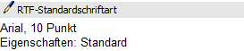
Ø Schriftart-Auswahl
Die Definition der RTF-Standardschriftart des Benutzers kann an dieser Stelle erfolgen. Durch einen Klick auf die voreingestellte Schriftart (hier "Arial, 10 Punkt") erfolgt die Auswahl der gewünschten Schrift und Größe.
Hinweis
Es dürfen an dieser Stelle nur die Schriftarten zugewiesen werden, welche im Programm CWLCTK definiert wurden. Ansonsten erscheint folgender Hinweis:
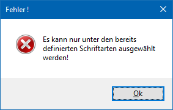
Microsoft Office Integration
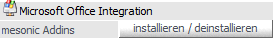
Über die mesonic Addins wird es ermöglicht Daten aus Microsoft Office-Produkten (Word, Excel und Outlook) an WinLine zu übergeben und umgekehrt.
Hinweis
Nähere Informationen zu der Nutzung bzw. den Voraussetzungen der Office Add-Ins entnehmen Sie bitte dem Handbuch, Kapitel Office Add-In bzw. Office Add-In Voraussetzungen.
Ø mesonic Addins "installieren / deinstallieren"
Durch Anwahl des Buttons "installieren / deinstallieren" werden folgende Schritte durchgeführt:
ü Wenn noch "alten" WinLine Addins im Programmverzeichnis der WinLine vorhanden sind, werden diese deregistriert.
ü Es wird die Installationsroutine der mesonic Addins aufgerufen ("OfficeAddin.exe" aus dem WinLine-Programmverzeichnis) und hierüber eine Installation bzw. Deinstallation der Addins ermöglicht.
Hinweis
Nach Abschluss der Installation steht in Microsoft Excel, Outlook und Word (ab Version 2007) der zusätzlicher Ribbon "WinLine" zur Verfügung.
PDF-Export - Optionen
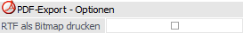
Ø RTF als Bitmap drucken
Der Standarddruck von RTF-Texten (Memofelder) als PDF gibt die im RTF enthaltenen Bitmaps nicht aus. Wird also eine Grafik per Copy & Paste in ein RTF- bzw. Memofeld eingefügt, so wird diese bei aktivierter Option auch im PDF eingefügt (bei der Konvertierung von .spl in .pdf).
PDF-Export - Sicherheit
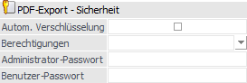
Ø Autom. Verschlüsselung
An dieser Stelle kann definiert werden, ob bei einer PDF-Ausgabe aus der WinLine heraus (z.B. rechte Maustaste in einer Bildschirmausgabe und dort "Speichern unter" als Acrobat Reader-Datei) das entstehende Dokument verschlüsselt werden soll.
Hinweis
Wenn in einem Formular mit dem Steuerelement "AUXMAIL" gearbeitet wird und dort ebenfalls eine Verschlüsselung definiert wurde, dann hat die dort getroffene Einstellung Vorrang.
Ø Berechtigungen
Über diese Auswahl wird definiert, was für Berechtigungen ein "Benutzer" bei dem PDF-Dokument besitzt, d.h. was man machen darf. Folgende Einstellungen stehen hierfür zur Auswahl:
ü Drucken
ü Kopieren
ü Veränderungen
ü Anmerkungen
Ø Administrator-Passwort / Benutzer-Passwort
An dieser Stelle wird jeweils die Benutzernummer eines Benutzers eingegeben (Autovervollständigung steht zur Verfügung), von welchem das Passwort für die Verschlüsselung genutzt werden soll. Dieses Passwort darf jeweils maximal 15 Zeichen betragen!
Hinweis
Damit die Berechtigung greift, müssen beide Felder ausgefüllt werden. Für diesen Zweck kann auch ein inaktiver Benutzer angelegt und genutzt werden.
Achtung
Nur wenn unter "Benutzer" eine Benutzernummer hinterlegt wurde, so erfolgt bei dem Öffnen des PDF-Dokuments im Adobe Acrobat Reader eine Kennwortabfrage.

Ansonsten würde das Dokument automatisch (ohne Kennwortabfrage) mit den eingeschränkten Rechten geöffnet werden.